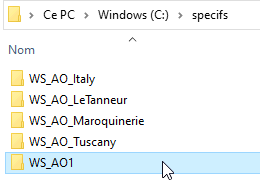
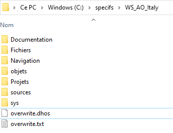
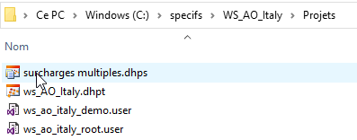
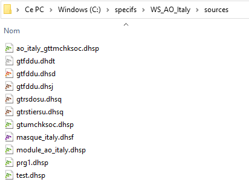
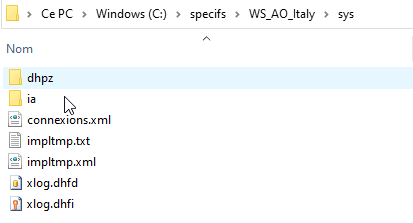

Une bonne organisation des répertoires est nécessaire pour obtenir une base de données et des dictionnaires en phase pour l'exécution des programmes.
1 - Chaque Add-on doit être dans un répertoire à part.

2 - Chaque répertoire d'add-on doit ensuite être structuré comme suit :

Navigation contient les fichier .dhbr générés par la compilation
Objets contient les objets (.dhop, .dhof, .dhoq etc.) générés par la compilation
Projets contient le fichier projet et les sous-projets.

Sources contient les sources de surcharge (dictionnaires et diva)

Sys contient le fichier des implicites et de connexions xml et le fichier xlogf.
